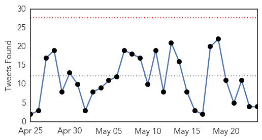
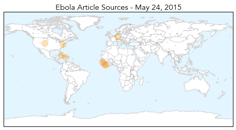
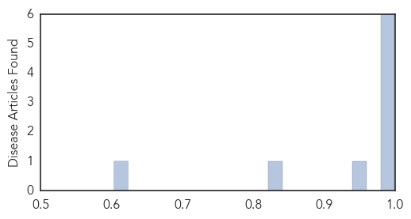

Ebola
30-Day Web Trend
0 alerts, 1 warnings

30-Day Twitter Trend
0 alerts, 0 warnings

Article Locations
Article Confidences
Top Articles:
- 0.999
- Liberia declared free of Ebola
- 0.999
- Sierra Leone makes progress in recovery from ebola crisis
- 0.997
- Colorado researchers fighting to get ahead of the next Ebola outbreak
- 0.992
- World effort wiping out killer diseases
- 0.986
- All Cuban medical workers return home from W Africa after Ebola fight
- 0.986
- We Owe You a Debt of Gratitude, President Sirleaf Tells AU-ASEOWA Medical Team & Volunteers
- 0.954
- Four more Portuguese Ebola specialists head for Guinea-Bissau
- 0.828
- Tracking the Aid Money: Mission Impossible
- 0.603
- TLC Africa
Top Tweets:
- 0.919
- From an Ebola survivor to an Ebola fighter - Deutsche Welle http://t.co/P8NWycF46V ebola EVD
- 0.915
- Byram soldier returns from Ebola front in Liberia - Daily Record http://t.co/EiNztdRo9q ebola EVD
- 0.890
- Ebola-free Liberia can hold internationals - Sky News Australia http://t.co/t63UWMpikn ebola EVD
- 0.746
- Meet the Liberian Filmmakers Who Made Documentaries on the Ebola Outbreak:... http://t.co/0bRFsSNXrq
- 0.699
- Colorado researchers fighting to get ahead of the next Ebola outbreak - The Denver Post http://t.co/THiIfluH0Z ebola EVD
- 0.658
- Guinea: World Bank Supports Improved Maternal and Child Health Services Beyond Ebola Outbreak:... http://t.co/aGUreftcrt
- 0.611
- How can technology play a role in preventing the spread of diseases like Ebola?
- 0.609
- From an Ebola survivor to an Ebola fighter - Deutsche Welle http://t.co/2RLxTWW1X9
- 0.584
- Ebola-free Liberia can stage internationals:... http://t.co/Ck7dXY4sHk
- 0.579
- $88.1m needed for 'last mile' of Ebola response — UN official:... http://t.co/tKuJljMGDo
Meningitis
30-Day Web Trend
0 alerts, 0 warnings

30-Day Twitter Trend
1 alerts, 0 warnings

Article Locations

Article Confidences

Top Articles:
-
No articles found for May 24, 2015
Top Tweets:
-
No tweets found for May 24, 2015